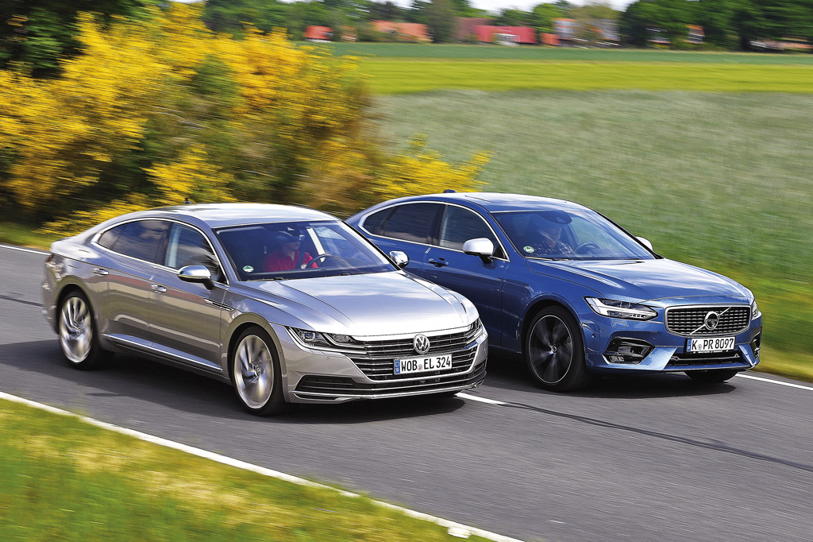

Anlatmakla Bitmez
Çevreci sporcu : BMW i8
Yüksek Sosyeteyi Oynuyorlar
VW’nin üst sınıfta savaşacak modeli Arteon ilk karşılaştırmasında. Zenginleri bilir misiniz? Burada kısa bir süre önce zengin olmuş sonradan görmeleri değil, kuşaklardır tüccar ya da sanayici olan ve en azından 10-20
Bakalım Kodiaq ne kadar iyi?
Kendisini aşmaya başlayan Skoda, yeni rakiplere meydan okuyor. Çek markanın büyük SUV’unun, elit Mercedes GLC ile uygun fiyatlı Koreli bestseller arasındaki konumunu araştırdık. Skoda… Çeklerin ucuz markası… Bu eskidendi.

Audi TT RS ve Chevrolet Corvette Stingray
Yeni yetme ihtiyar Rocker’a karşı Alman mükemmeliyetçiliği mi, vahşi Amerikan kas gücü mü? Spor otomobil düellomuzda tamamen farklı iki araç karşı karşıya. Peki ama hangisi gerçekten daha iyi? Justin Bieber mi, Bruce Springsteen mi? Buradaki seçim herkes için.